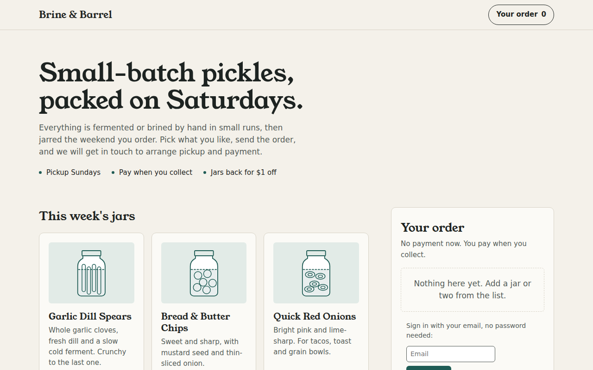
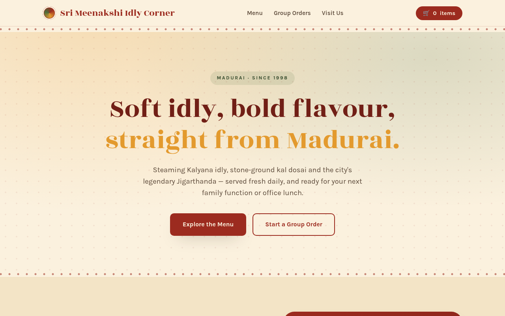
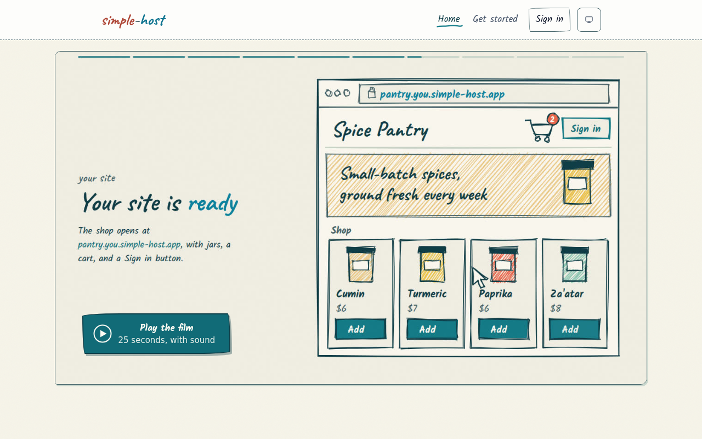
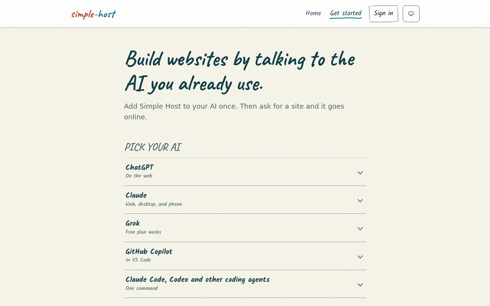

Simple Host plugin 1.0.1
Status: version 1.0.0 was rejected on 2026-10-12 because OpenAI could not link the verified individual, Vineet Sriram, to the Simple Host brand. That is fixed: the OpenAI organization is now named Vineet Sriram, and simple-host.app names him as its owner in the footer and on the Privacy and Support pages. Resubmit with version 1.0.1, below.
Download Simple Host plugin 1.0.1 ZIP, built 2026-10-13plugin.json, the MCP connection (https://simple-host.app/mcp), three skills (website-deploy, website-deploy-builder, connect-domain), and the icons. The package name is the listing's own, app-6ab570c7e41c81918c88f0026f2e1895. The version the portal reads is the version field in plugin.json: 1.0.1.
Steps
- Open platform.openai.com/plugins and choose Simple Host.
- Start a new version. Where the portal asks for a package, upload the plugin ZIP above. If its Skills tab asks for skills only, upload the skills ZIP there instead.
- Check each field against the lists below, and paste any that differ.
- In the Testing tab, either paste the cases below or upload chatgpt-app-submission.json in the "Use Codex" box. It holds the app info, all 47 tools with their three justifications, and the test cases.
- Choose Scan Tools. Expect 47 tools, each with an output schema, and no UI templates.
- Paste the release notes, confirm the attestations, and choose Submit for Review. After approval, choose Publish.
Info tab
1.0.1
Simple Host
30 characters at most.
Describe a site. It's online.
30 characters at most.
Tell ChatGPT the website you want, for example a salon site with a booking form, a product page with a waitlist, or a client portal, and Simple Host puts it online at its own address that you can share straight away. Sites can save data: tables, key-value data and files, 10 MB each per site. You pick who can read and add for each one, using presets such as inbox (anyone adds, only you read), records (each signed-in visitor sees only their own), or public. Visitors sign in on your site with Google or an email code, so "each client sees only their own" works without any code. Change a site any time by asking for it. The four latest versions are kept, so you can preview one or put it back, and a deleted site can be restored for 7 days. Ask how many people visited, which pages they read and where they came from. Give a site a free name.simple-host.app address or connect your own domain with HTTPS, lock a site with a passcode or open it only to people you name, and download a copy of any site whenever you like. Sign in once and ChatGPT remembers you in every chat after that. Simple Host is free and MIT open source, made and run by Vineet Sriram.
1162 of 4,000 characters.
Publish websites, each at its own public address Edit, rename, preview, roll back and delete your sites Save bookings, quote requests, waitlists and orders Choose who can read and add saved data, with simple presets Let visitors sign in so each person sees only their own records Lock a site with a passcode or open it only to named people Connect your own domain or a free simple-host.app address See visitors, top pages and where they came from Download a copy of any site
One per line in the portal.
Vineet Sriram
Must match the verified individual and the OpenAI organization name.
Productivity
https://simple-host.app/
https://simple-host.app/privacy.html
https://simple-host.app/terms
https://simple-host.app/support
The page lists support@simple-host.app. If the portal asks for an email, use support@simple-host.app.
support@simple-host.app


Both are also inside the plugin ZIP under assets/.
MCP tab
https://simple-host.app/mcp
OAuth. ChatGPT registers itself (dynamic client registration with PKCE), so there is nothing to paste. Domain verification was done in September; verify again only if the portal asks.
openai-review@simple-host.app
Not on this page. On the server: sudo cat /root/simple-host-reviewer-password
Connect the Simple Host app. In the sign-in window that opens, choose "Reviewer sign-in", enter the demo email and password, choose Sign in, then Allow. There is no email code, SMS, or MFA. The account holds sample sites with sample data: pickle-shop (an online pickle shop with 4 orders) and feedback-survey (a customer survey with 8 responses), at https://<site>.openai-review.simple-host.app/.
Prompts tab
Make a booking page for my hair salon where clients pick a service and a time, then show me who has booked
Build a waitlist page for my new product launch and tell me how many people have signed up
Make a client portal for my design studio where each client signs in and sees only their own page
Testing tab
Five positive and three negative cases. The demo account sites are at https://<site>.openai-review.simple-host.app/.
Positive 1. Publish a new business website that takes bookings.
Make a booking page for my hair salon, Studio Nine, where clients pick a service and a time, and publish it.
get_page_recipe, create_site, storage_set_resource
The model asks once before the site goes online; after a yes, the site is published and its public address is returned (https://<site>.openai-review.simple-host.app/). It shows the services and a booking form; bookings save to a SQLite resource with the records preset, so each client sees only their own bookings and the owner sees all of them.
Positive 2. Read what a site has collected, using the sample pickle shop in the demo account.
Who has ordered from my pickle shop so far, and what did they order?
storage_sql_query
The 4 sample orders with the customer name, the items, the total, and the status, read from the "orders" SQLite resource. The owner sees every order; each customer's own page shows only their own.
Positive 3. Change a live site, then undo the change, using the sample feedback survey in the demo account.
On my feedback survey, change the heading to "Tell us how we did". Then, in the same chat: Actually, undo that.
read_site_file, update_site, list_versions, rollback_site
The live survey shows the new heading; after the undo the previous version is live again with the original heading.
Positive 4. Publish a site and connect the person's own domain.
Make a one-page site for my bakery, Bakery by Anna, then put it on bakerybyanna.com.
create_site, connect_domain
The site is published at its own address, and connect_domain returns the two DNS records to add at the registrar: the address record and a TXT ownership record. The domain stays provisional and serves nothing until the TXT record proves the person owns it.
Positive 5. See how many people visited a site.
How many people visited my pickle shop in the last 30 days, and where did they come from?
site_analytics
Visit totals for the period split into people and bots, with the most viewed pages and the domains people came from (all zero is a valid answer for the demo account).
Negative 1
Help me brainstorm names for my new hair salon.
Brainstorming only; nothing is being built or published, so Simple Host should not be used.
Negative 2
Deploy my Node.js API with a Postgres database to production.
Deploying a server application with a database is outside what Simple Host does (it hosts websites).
Negative 3
Summarize what's on https://example.com for me.
Reading or summarising someone else's website is not something Simple Host does.
Release notes
Resubmission of 1.0.0, which was rejected because the brand could not be linked to the verified developer. simple-host.app now names its owner, Vineet Sriram, in the site footer and on the Privacy and Support pages, and the OpenAI organization is named Vineet Sriram. The listing copy, starter prompts, and test cases now describe the current connector: storage access presets for bookings, orders, waitlists, and client portals, passcodes and named viewers, home pages, and a get_page_recipe tool with exact page code. The MCP server address and sign-in are unchanged.
Screenshots
The ChatGPT portal accepts screenshots only from apps whose MCP server returns UI, and Simple Host returns none, so upload none there. These are current shots of the live product for any other form that asks.








Demo recording
Recorded 2026-10-03 in ChatGPT: a pottery shop built and published from one request, then its orders read back (2:26). Use its link if the portal asks for a demo video.
downloads/simple-host-demo.mp4
What changed since September
- The connector works on the free plans of ChatGPT, Claude, and Grok.
- In ChatGPT, people add Simple Host from the Plugins page: Add, then Add custom MCP server, name it Simple Host, paste https://simple-host.app/mcp, save, sign in, and choose Allow.
- Saved data uses KV, SQLite, and file storage with access presets. Each preset sets who may read, add, edit, and delete: public, inbox, wall, records, personal, board, and private. The get_page_recipe tool returns working page code for bookings, waitlists, client portals, menus, orders, and other everyday jobs.
- The older saved-data routes (state, collections, and declared data) closed to new sites on 2026-10-12. Sites created before then keep working.
- Sites can have a passcode or open only to the people the owner names, and every person can pick a site as their home page.
- simple-host.app names its owner, Vineet Sriram, in the footer and on the Privacy and Support pages.